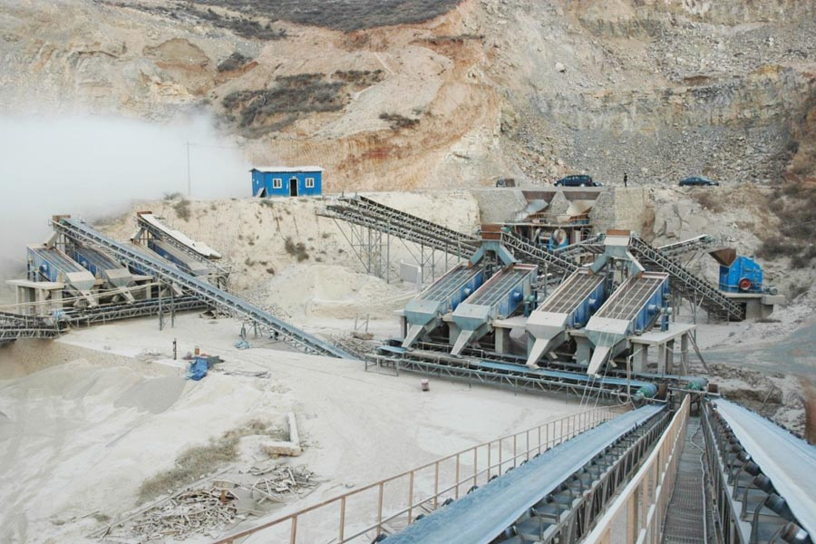

Construction waste crushing production line

Mobile construction waste crushing station for urban construction waste crushing.
small aggregates crushing machine
small aggregates crushing machine
River gravel aggregate in the concrete part of the quality of hard, with compression, wear and corrosion-resistant properties of natural stone, is an ideal building material. Along with the increase in infrastructure demand for concrete aggregates, mechanisms river gravel has been widely used. Mechanism of river gravel processed through river gravel crusher, compared to the natural resources of river gravel, river gravel mechanism has the following advantages in the concrete aggregate applications:

1, strong adhesion
Compared to the natural river gravel, river gravel mechanism of higher strength, adhesion stronger, can effectively increase the strength of concrete aggregate, improve the quality of concrete. Natural river pebbles as often will be the impact of water, so the surface looks very mellow, smooth, in the application of concrete, the adhesion between the cementitious material is not strong enough, it will reduce the strength of concrete aggregate. After the processing of river gravel sand surface is very rough, can effectively increase the adhesion between itself and cementitious materials, greatly improving the hardness of concrete aggregate, improve application quality concrete.
2, good durability
Durability refers to the material resistance itself and the natural environment of long-term damaging effects of two factors, better durability, longer life, if we maintain a strong aggregate concrete impermeability in a long time, frost resistance and corrosion resistance, it indicates that the concrete has better durability. Mechanism of river gravel aggregate used in concrete can effectively improve the durability of concrete, greatly improving the value of concrete. Mechanism of river gravel density than the density of natural river gravel, can effectively enhance the strength of concrete. With the accelerated pace of national infrastructure, mechanisms river gravel aggregate in the concrete application of the status of the increasingly high and more broad prospects for development.
Original title: Mechanism river gravel aggregate in the concrete application
Leave Me A Message, Now
If you have any questions regarding equipment prices, production line configuration or other problems, you can send a message to us, we will contact you soon.